58 molécules15 à dessiner64 concepts2 questions du prof
Le chapitre part des bases : base purique/pyrimidique + sucre (ribose ou désoxyribose) = nucléoside ; + phosphate = nucléotide. La plupart des antiviraux sont des antimétabolites qui s'opposent aux polymérases ou à la transcriptase inverse. Peu de structures à dessiner au final.
gras souligné = comprendrebleu = DCI + nom commercial + classebleu gras souligné = dessinerrouge = très important
58 molécules (15 à dessiner) · afficher :
Antiviraux : généralités, VIH, acides nucléiques, virus respiratoires (influenza, VRS, SARS-CoV-2), herpès et CMV45 concepts · 36 molécules (15 à dessiner) · p. 176-194
Concepts à comprendre (45)
Virus = parasite intracellulaire obligatoire
Contrairement aux bactéries, les virus ont nécessairement besoin d'une cellule hôte pour se multiplier : ce sont des parasites intracellulaires. Ils se multiplient par réplication de leur acide nucléique en utilisant la machinerie de la cellule hôte.
Pourquoi est-il plus difficile de trouver des antiviraux sélectifs que des antibiotiques ?
Parce que le virus utilise la machinerie de la cellule hôte pour se répliquer : il faut viser des étapes ou des enzymes propres au virus (polymérase, transcriptase inverse, protéase, neuraminidase…) sans toucher la cellule.
L'acide nucléique viral (génome)
Le génome viral est un filament d'ADN ou d'ARN, circulaire ou linéaire, bicaténaire (double brin) ou monocaténaire (simple brin). L'ADN viral est généralement bicaténaire ; l'ARN est généralement monocaténaire, à polarité positive (même sens qu'un ARNm) ou négative (complémentaire d'un ARNm). Le peloton central d'acide nucléique s'appelle le nucléoïde.
Pourquoi l'ARN du SARS-CoV-2 peut-il être traduit directement par les ribosomes dès l'entrée du virus ?
Parce que c'est un ARN simple brin à polarité positive : il a le même sens qu'un ARN messager et peut donc être lu directement par les ribosomes (p.190).
La capside et la nucléocapside
La capside est une coque protéique qui entoure et protège l'acide nucléique viral. Capside + nucléoïde = nucléocapside. La structure de la capside donne la forme du virus : symétrie cubique ou symétrie hélicoïdale.
Pourquoi l'étape de décapsidation est-elle indispensable à la réplication ?
Parce que l'acide nucléique doit être libéré de sa capside protectrice pour être répliqué et transcrit ; bloquer la décapsidation (comme l'amantadine via M2) empêche la multiplication.
L'enveloppe : virus enveloppés vs virus nus ; le virion
De nombreux virus sont entourés d'une enveloppe acquise lors de la traversée des membranes cellulaires, faite d'un mélange d'éléments cellulaires et viraux (protéines, glucides, lipides). Les virus avec enveloppe sont dits enveloppés, ceux sans enveloppe sont des virus nus. La forme libre du virus (particule virale) est le virion.
Pourquoi l'enveloppe virale contient-elle des éléments d'origine cellulaire ?
Parce qu'elle prend naissance au cours de la traversée des membranes de la cellule hôte (bourgeonnement) : le virus emporte un fragment de membrane cellulaire.
Cycle viral 1 : attachement (adsorption)
Une protéine virale se lie à un récepteur de la surface cellulaire. Chez les eucaryotes, ces récepteurs sont des glycoprotéines ou des glycosphingolipides. Pour le VIH : gp120 virale + CD4 du lymphocyte T4 (+ un co-récepteur).
Pourquoi le VIH infecte-t-il préférentiellement les lymphocytes T4 ?
Parce que l'attachement repose sur la reconnaissance entre la gp120 du virus et la protéine CD4 (avec un co-récepteur) présente à la surface de ces lymphocytes.
Cycle viral 2 : pénétration
Chez les bactériophages, seul le génome pénètre dans la bactérie. Chez les virus animaux : pinocytose (souvent les virus nus, la nucléocapside entre entourée de membrane plasmique), ou pour les virus enveloppés fusion (enveloppe virale + membrane plasmique) ou endocytose (accumulation dans des vésicules cytoplasmiques).
Pourquoi le nirsévimab, qui bloque la protéine F du VRS, empêche-t-il l'infection ?
Parce que la protéine F (fusion) est nécessaire à la fusion de l'enveloppe du VRS avec la membrane de la cellule ; bloquée en conformation de préfusion, elle ne permet plus l'entrée du virus (p.189).
Cycle viral 3 : décapsidation
Après la pénétration (ou en même temps), l'acide nucléique est libéré de la capside. Selon les virus, la décapsidation a lieu dans le cytoplasme ou dans le noyau.
Pourquoi l'amantadine est-elle qualifiée d'inhibiteur de l'« uncoating » ?
Parce qu'en bloquant le canal ionique M2 elle empêche l'acidification nécessaire à la sortie des acides nucléiques hors de la capside dans la cellule cible (p.187).
Réplication du génome, expression sous forme d'ARNm (transcription) et traduction des ARNm en protéines par la machinerie cellulaire. Le mécanisme diffère beaucoup selon le type de virus et la nature (ADN/ARN) de son génome.
Pourquoi la plupart des antiviraux agissent-ils à l'étape de réplication ?
Parce que c'est là qu'interviennent les enzymes virales (ADN polymérase, ARN polymérase ARN-dépendante, transcriptase inverse) que les antimétabolites nucléosidiques peuvent leurrer et inhiber.
Cycle viral 5 : assemblage
Assemblage et maturation des virus dans les cellules infectées, avec encapsidation du génome. Les virus enveloppés acquièrent leur enveloppe par bourgeonnement, aux dépens de la membrane plasmique ou nucléaire de la cellule hôte.
Pourquoi le maribavir gêne-t-il l'encapsidation de l'ADN du CMV ?
Parce qu'en inhibant la kinase UL97 pendant la réplication de l'ADN viral, il perturbe la maturation et l'encapsidation de l'ADN du CMV ainsi que sa sortie nucléaire (p.194).
Cycle viral 6 : libération
Le virus reconstitué est libéré à l'extérieur de la cellule sous forme de virion, et peut infecter de nouvelles cellules.
Pourquoi les inhibiteurs de la neuraminidase agissent-ils à l'étape de libération ?
Parce que la neuraminidase coupe les résidus d'acide sialique qui retiennent les virions néoformés à la surface de la cellule infectée : sans elle, les virus restent accrochés et ne se propagent plus (p.188).
SIDA et VIH
Le SIDA est un ensemble de symptômes consécutifs à la destruction des lymphocytes T CD4+. Les premiers cas datent de 1981 (infections opportunistes, sarcome de Kaposi). Le VIH est un lentivirus de la famille des rétrovirus (virus à ARN), agent étiologique du SIDA.
Pourquoi le VIH est-il classé parmi les rétrovirus ?
Parce que son génome est de l'ARN qui est rétrotranscrit en ADN double brin par la transcriptase réverse avant d'être intégré au génome de la cellule hôte.
Cycle du VIH en 8 étapes
1) Attachement (gp120–CD4 + co-récepteur) ; 2) Pénétration par fusion des membranes ; 3) Décapsidation (libération de l'ARN) ; 4) Réverse transcription en ADN double brin puis intégration au génome par l'intégrase ; 5) Traduction des ARNm en trois précurseurs protéiques, découpés par la protéase ; 6) Assemblage ; 7) Bourgeonnement ; 8) Libération de nouveaux virus qui infectent d'autres T4.
Pourquoi l'ADN viral du VIH persiste-t-il dans la cellule ?
Parce que, après rétrotranscription, il pénètre dans le noyau et est incorporé au génome de la cellule hôte par l'intégrase virale.
Transcriptase réverse (inverse) virale
Enzyme du VIH qui rétrotranscrit l'ARN viral en ADN double brin. C'est une cible majeure des anti-VIH ; le foscarnet l'inhibe aussi.
Pourquoi la transcriptase réverse est-elle une bonne cible sélective ?
Parce que les cellules humaines n'ont pas besoin de cette activité ARN → ADN : l'inhiber bloque la réplication du rétrovirus.
Intégrase virale
Enzyme du VIH qui incorpore l'ADN viral (issu de la rétrotranscription) dans le génome de la cellule hôte, d'où il sera ensuite transcrit en ARN.
Pourquoi inhiber l'intégrase empêche-t-il la production de nouveaux virus ?
Parce que sans intégration, l'ADN viral n'est pas incorporé au génome hôte et n'est donc pas transcrit en ARN messagers viraux.
Protéases du VIH (protéase à acides aspartiques)
Les ARNm viraux sont traduits en trois précurseurs polyprotéiques que la protéase du VIH (protéase à acides aspartiques) découpe en protéines de structure et enzymes virales (transcriptase inverse et intégrase).
Pourquoi un inhibiteur de protéase bloque-t-il la maturation du virus ?
Parce que les protéines virales sont produites sous forme de polyprotéines inactives qui doivent être clivées par la protéase pour devenir fonctionnelles.
Cibles des médicaments anti-VIH
La recherche anti-VIH vise les étapes du cycle et surtout les enzymes virales : la transcriptase inverse, l'intégrase, les protéases à acides aspartiques. Des inhibiteurs de fusion et d'entrée du virus (antagonistes de co-récepteurs) ont également été développés.
Pourquoi les antagonistes de co-récepteurs empêchent-ils l'infection ?
Parce que l'attachement du VIH nécessite la liaison gp120–CD4 ET un co-récepteur : bloquer ce dernier empêche l'entrée du virus.
Principe des antimétabolites
La plupart des antiviraux (et des anticancéreux) sont des antimétabolites : analogues structuraux des bases puriques et pyrimidiques et des nucléosides (modification sur la base ou sur le ribose). Assez proches des molécules biologiques pour entrer dans le métabolisme, assez différents pour le perturber : ADN/ARN non fonctionnels, inhibition de la DNA polymérase, inhibition de la transcription ou de la transcriptase inverse.
Pourquoi un antimétabolite doit-il être « ni trop proche ni trop différent » du nucléoside naturel ?
Trop différent, il ne serait pas reconnu par les enzymes (kinases, polymérases) ; trop proche, il serait incorporé sans perturber la synthèse. Il doit être pris en charge par le métabolisme tout en le bloquant.
Activation en triphosphate (et pourquoi on ne donne pas le triphosphate)
Les antimétabolites sont administrés sous forme de base ou de ribonucléoside. Ils ne perturbent la synthèse d'ADN ou d'ARN qu'après transformation en dérivés triphosphates par les enzymes de la cellule hôte ou du virus. On n'administre pas directement les triphosphates car, très polaires, ils ne pénètrent que peu ou pas dans les cellules.
Pourquoi n'administre-t-on pas directement le triphosphate d'aciclovir ?
Parce que les triphosphates sont très polaires (charges négatives des phosphates) et ne traversent pas les membranes cellulaires ; on donne la forme nucléoside que la cellule phosphoryle elle-même.
Le nucléotide : 3 parties
Les acides nucléiques sont des polymères de nucléotides reliés par des liens phosphodiester. Un nucléotide = un groupement phosphate + un sucre à 5 carbones (désoxyribose pour l'ADN, ribose pour l'ARN) + une base azotée (purine ou pyrimidine).
Pourquoi un analogue de nucléotide incorporé par la polymérase peut-il perturber la chaîne d'acide nucléique ?
Parce que l'acide nucléique est un enchaînement de nucléotides reliés par des liens phosphodiester : un analogue incorporé conduit à un ADN/ARN non fonctionnel ou perturbe l'élongation (ex. terminaison retardée de la chaîne d'ARN avec le remdésivir, p.190).
Ribose vs 2-désoxyribose
Le ribose (ARN) porte des OH en 2 et en 3 ; le 2-désoxyribose (ADN) n'a pas d'OH en 2 (le cours met en rouge le 2-OH du ribose). Les carbones du sucre sont numérotés 1 à 5 ; dans un nucléoside ils deviennent 1' à 5'.
Pourquoi dit-on « 2'-désoxy » et non simplement « désoxy » ?
Parce que l'oxygène manquant est précisément celui du carbone 2' du sucre ; le 3'-OH et le 5'-OH sont conservés.
Bases azotées : purines et pyrimidines
Purines (bicycle pyrimidine + imidazole, numérotées 1 à 9) : adénine (NH2 en 6) et guanine (C=O en 6, NH2 en 2). Pyrimidines (cycle à 6, N en 1 et 3) : thymine (C=O en 2 et 4, CH3 en 5), cytosine (NH2 en 4, C=O en 2) et uracile (C=O en 2 et 4, sans CH3).
Pourquoi l'aciclovir et le ganciclovir sont-ils dits antimétabolites de la guanosine et non de l'adénosine ?
Parce que leur base est une purine portant un C=O en 6 et un NH2 en 2 : c'est la guanine (l'adénine n'a qu'un NH2 en 6 et pas d'oxygène).
Nucléoside
Lorsque la base azotée est liée au ribose, l'ensemble s'appelle un nucléoside : adénine → adénosine, guanine → guanosine, thymine → thymidine, cytosine → cytidine, uracile → uridine. La base est liée au C1' du sucre par N9 (purines) ou N1 (pyrimidines).
Pourquoi l'adénosine n'est-elle pas un nucléotide ?
Parce qu'elle n'a que la base et le sucre ; il lui manque le phosphate. Avec un phosphate en 5' elle devient l'AMP (nucléotide).
Désoxynucléoside
Nucléoside dont le sucre est le 2-désoxyribose : désoxyadénosine (dA), désoxyguanosine (dG), désoxythymidine (dT), désoxycytidine (dC), désoxyuridine (dU). Dans le tableau du cours, la thymidine « ribo » est rare (ribothymidine).
Pourquoi le ganciclovir est-il présenté comme un analogue de la 2'-désoxyguanosine plutôt que de la guanosine ?
Parce que sa chaîne acyclique ne porte pas d'équivalent du 2'-OH : comme la 2'-désoxyguanosine (sucre de l'ADN), elle n'a que des équivalents des OH en 3' et 5' (p.194).
Nucléotides : NMP, NDP, NTP
Un nucléoside lié à un phosphate (en 5') est un nucléotide ou NMP (nucléoside monophosphate, N = le nucléoside) : adénosine + 1 phosphate = AMP = A. Avec deux ou trois phosphates : NDP et NTP (ADP, ATP). Le cours liste aussi cAMP, cGMP et les désoxynucléotides (dAMP… dATP…).
Pourquoi le triphosphate de remdésivir est-il comparé à l'ATP ?
Parce que le remdésivir est un analogue nucléotidique de l'adénosine ; sous forme triphosphate il imite l'ATP, substrat naturel de l'ARN polymérase, et l'inhibe de façon compétitive (p.190).
ADN et ARN
On distingue deux types d'acides nucléiques : l'ADN (acide désoxyribonucléique, nucléotides à 2-désoxyribose) et l'ARN (acide ribonucléique, nucléotides à ribose).
Pourquoi les virus à ARN ont-ils besoin d'enzymes que la cellule n'a pas (ARN polymérase ARN-dépendante, transcriptase inverse) ?
Parce que la cellule ne sait copier que de l'ADN en ADN ou de l'ADN en ARN ; pour copier leur ARN, les virus apportent leurs propres enzymes, qui deviennent des cibles (remdésivir, foscarnet).
La grippe (Myxovirus influenzae A et B)
La grippe commune est une maladie infectieuse virale contagieuse due à des Myxovirus influenzae, essentiellement de type A ou B, avec de nombreuses variantes antigéniques en perpétuelle évolution. Par le passé, on a utilisé des inhibiteurs de fusion (amantadine, rimantadine) et des inhibiteurs de neuraminidase.
Pourquoi faut-il un vaccin antigrippal chaque année ?
Parce que les virus influenza présentent de nombreuses variantes antigéniques en perpétuelle évolution.
Amantadine : inhibe la pénétration du génome viral (canal M2)
L'amantadine, dérivé de l'adamantane, inhiberait la pénétration du génome viral dans la cellule hôte. Avec la rimantadine, elle se fixe à la protéine-canal ionique M2 de la nucléocapside du virus grippal, absente chez l'influenza B. M2 régule le pH du virus et la conformation de son hémagglutinine.
Pourquoi l'amantadine est-elle inactive sur la grippe B ?
Parce que sa cible, la protéine-canal M2, est absente chez le virus influenza de type B.
Influenza A et maladie de Parkinson : les deux indications de l'amantadine
L'amantadine (chlorhydrate) est utilisée en prophylaxie et en traitement de l'Influenza A, mais aussi dans la maladie de Parkinson, où elle agit en augmentant la libération de dopamine. C'est un antiparkinsonien mineur, utilisé seul dans les formes débutantes ou associé à un autre antiparkinsonien.
Pourquoi un neurologue peut-il prescrire un « antiviral » à un patient parkinsonien ?
Parce que l'amantadine augmente la libération de dopamine, ce qui en fait un antiparkinsonien mineur, indépendamment de son effet antiviral.
Inhibiteurs de la neuraminidase (« antigrippaux »)
Zanamivir (inhalation) et oseltamivir (per os, TAMIFLU®) inhibent la neuraminidase (sialidase), glycohydrolase virale de surface qui scinde les liaisons des résidus d'acide sialique à la surface des cellules infectées et permet la libération et la prolifération des virus grippaux A et B. Donnés préventivement ou en tout début de grippe, ils en réduisent la gravité.
Pourquoi le zanamivir est-il inhalé alors que l'oseltamivir est avalé ?
Parce que le zanamivir a une faible biodisponibilité orale, tandis que l'oseltamivir est une prodrogue ester, absorbée per os puis hydrolysée par les estérases hépatiques en acide actif.
L'oseltamivir n'est plus indiqué dans la grippe
L'oseltamivir n'est plus indiqué pour le traitement ou la prophylaxie de la grippe étant donné le rapport coûts-bénéfices négatif.
Pourquoi un médicament actif sur la neuraminidase peut-il perdre son indication ?
Parce que le bénéfice clinique obtenu ne justifie pas son coût : le rapport coûts-bénéfices est jugé négatif.
Les antiviraux ne remplacent en aucun cas la vaccination
Les antigrippaux ne peuvent en aucun cas remplacer la vaccination annuelle contre l'influenza, dont l'effet sur la morbidité et la mortalité est démontré. La figure du cours le rappelle : la vaccination annuelle reste la stratégie la plus efficace pour prévenir la grippe.
Pourquoi conseiller le vaccin plutôt qu'une boîte de TAMIFLU® « au cas où » ?
Parce que le vaccin a un effet démontré sur la morbidité et la mortalité, alors que l'oseltamivir n'est plus indiqué (coûts-bénéfices négatif) et ne remplace en aucun cas la vaccination.
Ribavirine (figure du cycle de l'influenza)
Dans la figure récapitulative du cours, la ribavirine cible la polymérase virale (PB1, PB2, PA) et inhibe la fonction polymérase et donc la réplication virale. Active in vitro sur l'influenza A et B, voie orale, IV ou inhalation, son utilisation est limitée dans la grippe (surtout situations particulières).
Pourquoi la ribavirine agit-elle à une autre étape que l'oseltamivir ?
Parce qu'elle inhibe la polymérase virale (réplication de l'ARN), alors que l'oseltamivir agit sur la neuraminidase (libération des virions).
Bronchiolite à VRS : pas d'antibiotique
La bronchiolite est généralement causée par le virus respiratoire syncytial (VRS). Elle touche surtout les jeunes enfants (<1 an) et les personnes âgées ; la guérison est généralement spontanée en 3 à 7 jours. La bronchiolite ne constitue pas une indication d'antibiothérapie.
Pourquoi un antibiotique est-il inutile dans une bronchiolite ?
Parce qu'elle est due à un virus (VRS) : les antibiotiques n'agissent pas sur les virus, et la guérison est généralement spontanée en 3 à 7 jours.
Nirsévimab : schéma d'administration
Le nirsévimab (BEYFORTUS®) prévient les infections respiratoires basses à VRS chez les nouveau-nés et nourrissons jusqu'à 1 an. Chez les enfants à haut risque, une administration est aussi recommandée au cours de la 2e année de vie. Une seule administration de nirsévimab est recommandée par saison (contre une dose par mois, max 5, pour le palivizumab).
Pourquoi le nirsévimab est-il plus pratique que le palivizumab pour les parents ?
Parce qu'une seule administration par saison suffit, alors que le palivizumab (SYNAGIS®) se donne une fois par mois pendant la saison à risque (maximum 5 doses).
Nirsévimab : cible la protéine F (F1/F2) du VRS
Le nirsévimab est un anticorps monoclonal humain recombinant qui se lie aux sous-unités F1 et F2 de la protéine de fusion (F) du VRS et la bloque dans sa conformation de préfusion pour empêcher l'entrée du virus dans la cellule hôte.
Pourquoi bloquer la protéine F en conformation de préfusion empêche-t-il l'infection ?
Parce que la protéine F doit changer de conformation pour fusionner l'enveloppe virale avec la membrane cellulaire ; figée en préfusion, elle ne permet plus la fusion ni l'entrée du virus.
Produits repositionnés contre le COVID-19 : hydroxychloroquine, ivermectine
Une série de produits « repositionnés » ont été testés dans le COVID-19, comme l'hydroxychloroquine et l'ivermectine. Ils ne sont pas recommandés à ce jour dans cette indication en raison de résultats contradictoires, tant en prévention qu'en traitement.
Pourquoi ne pas délivrer de l'ivermectine « pour prévenir le COVID » ?
Parce que les résultats sont contradictoires en prévention comme en traitement : ce produit n'est pas recommandé dans cette indication.
SARS-CoV-2 : polyprotéines, PLpro et Mpro (3CLpro, nsp5)
Le génome du SARS-CoV-2 est un ARN simple brin positif (~30 kb), traduit directement par les ribosomes en deux polyprotéines pp1a et pp1ab contenant les protéines non structurales (nsp), inactives tant qu'elles ne sont pas clivées. Deux protéases virales les coupent : PLpro (quelques sites) et Mpro (= 3CLpro = nsp5). Mpro est indispensable pour libérer l'ARN polymérase virale (RdRp, nsp12) : sans Mpro, pas de réplication.
Pourquoi inhiber Mpro (nirmatrelvir) bloque-t-il la réplication alors que Mpro n'est pas la polymérase ?
Parce que la polymérase virale (RdRp, nsp12) est produite au sein d'une polyprotéine inactive : c'est Mpro qui la libère ; sans clivage, pas de polymérase fonctionnelle.
Ritonavir à faible dose dans PAXLOVID®
Le ritonavir est aussi un inhibiteur de protéase mais il n'est pas actif contre le SARS-CoV-2. Il est associé à faible dose au nirmatrelvir pour ralentir le métabolisme de celui-ci.
Pourquoi associer au nirmatrelvir un inhibiteur de protéase inactif sur le SARS-CoV-2 ?
Pour ralentir le métabolisme du nirmatrelvir et ainsi maintenir ses concentrations : le ritonavir joue un rôle pharmacocinétique, pas antiviral ici.
Remdésivir : prodrogue analogue nucléotidique de l'adénosine
Le remdésivir (VEKLURY®) est une prodrogue analogue nucléotidique de l'adénosine, métabolisée dans les cellules hôtes en nucléoside triphosphate actif. Ce triphosphate agit comme un analogue de l'ATP et inhibe de façon compétitive l'ARN polymérase ARN-dépendante du SARS-CoV-2, avec une terminaison retardée de l'élongation de la chaîne d'ARN. Les balises belges lui accordent une place nulle (formes sévères) à très limitée (formes légères/modérées à risque).
Pourquoi le remdésivir est-il donné sous forme de prodrogue phosphoramidate plutôt que sous forme triphosphate ?
Parce que les triphosphates, très polaires, ne pénètrent pas dans les cellules ; le phosphate masqué de la prodrogue lui permet d'entrer, puis la cellule le transforme en triphosphate actif (principe des antimétabolites, p.181).
Foscarnet : phosphonoformate non nucléosidique actif sur virus à ADN et à ARN
Le foscarnet trisodique (FOSCAVIR®) est un phosphonoformate non nucléosidique, le seul à agir sur les virus à DNA et à RNA : il inhibe l'ADN polymérase des virus du groupe herpès (HSV, VZV, EBV, CMV) et du VHB, et inhibe de plus la transcriptase inverse des rétrovirus comme le VIH.
Pourquoi le foscarnet n'a-t-il pas besoin de la thymidine kinase virale pour agir ?
Parce que ce n'est pas un nucléoside : il n'a pas à être phosphorylé, il inhibe directement les polymérases (ADN polymérase, transcriptase inverse).
Antimétabolites de la guanosine : activation par la thymidine kinase virale
L'aciclovir, le ganciclovir et le penciclovir sont des antimétabolites de la guanosine. Ils sont phosphorylés en monophosphates par une enzyme d'origine virale, la thymidine kinase, puis en triphosphates par les kinases cellulaires ; c'est le triphosphate qui inhibe l'ADN polymérase virale. Indiqués dans l'herpès viral, local ou systémique.
Pourquoi l'aciclovir agit-il surtout dans les cellules infectées par l'herpès ?
Parce que sa première phosphorylation est faite par la thymidine kinase d'origine virale : il n'est activé efficacement que là où le virus est présent.
Prodrogues des antiherpétiques : biodisponibilité orale
Famciclovir = prodrogue du penciclovir (plus de spécialité en Belgique) ; valaciclovir (ZELITREX®) = prodrogue de l'aciclovir, ester de valine ; valganciclovir (VALCYTE®) = ester de valine du ganciclovir. Elles ont un spectre comparable au produit actif mais une meilleure biodisponibilité orale. Le valganciclovir atteint ~60 % contre ~6 % pour le ganciclovir à jeun car l'ester de valine est substrat du transporteur peptidique PEPT1.
Pourquoi ajouter une valine augmente-t-il l'absorption intestinale ?
Parce que l'ester d'acide aminé fait se comporter la molécule comme un substrat du transporteur peptidique intestinal PEPT1 ; une fois absorbée, elle est hydrolysée en produit actif + valine.
Cidofovir : CMV résistant au ganciclovir
Le cidofovir (VISTIDE®) est un analogue de la cytidine, actif après phosphorylation contre les souches de cytomégalovirus humain résistantes au ganciclovir. Il est prescrit dans la rétinite à CMV chez les immunodéficients.
Pourquoi le cidofovir est-il une alternative au ganciclovir dans la rétinite à CMV ?
Parce qu'il est actif, après phosphorylation, contre les souches de CMV humain résistantes au ganciclovir ; c'est un analogue de la cytidine (et non de la guanosine comme le ganciclovir).
Ganciclovir/valganciclovir : réservés aux infections graves à CMV
Le ganciclovir, analogue de synthèse de la 2'-désoxyguanosine, inhibe les virus du groupe herpès (CMV, HSV-1/2, HHV-6/7/8, EBV, VZV, VHB). Compte tenu de leur toxicité, ganciclovir et valganciclovir sont uniquement indiqués dans les infections graves à CMV (p.ex. atteinte d'organe) chez les immunodéprimés.
Pourquoi ne prescrit-on pas le valganciclovir pour un simple bouton de fièvre, malgré son activité sur HSV ?
Parce que sa toxicité le réserve aux infections graves à CMV chez l'immunodéprimé ; pour l'herpès, on utilise l'aciclovir ou le valaciclovir.
Maribavir : inhibiteur de la kinase UL97
Le maribavir (LIVTENCITY®) est un inhibiteur compétitif de la protéine kinase UL97 du CMV. L'inhibition se produit pendant la réplication de l'ADN viral et bloque la réplication et la maturation de l'ADN du CMV, son encapsidation et sa sortie nucléaire. Les anti-CMV du cours sont ganciclovir, valganciclovir, létermovir et maribavir.
Pourquoi le maribavir n'est-il pas un antimétabolite comme le ganciclovir ?
Parce qu'il ne se fait pas passer pour un nucléotide incorporé par la polymérase : il inhibe une enzyme virale différente, la kinase UL97.
Oses des acides nucléiques 2 molécules · 2 à dessiner
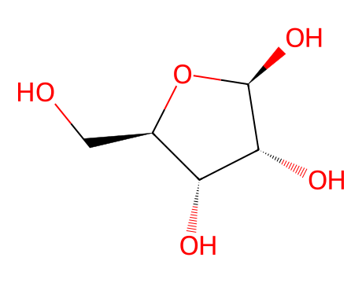
Riboseà dessiner
pas de nom commercial au cours
Oses des acides nucléiques — Pentose de l'ARN
Noyau : Furanose (cycle à 5 atomes : 4 C + 1 O), sucre à 5 atomes de carbone
Structure-activité
Porte un OH en 2 (mis en rouge dans le dessin du cours) ET un OH en 3 : c'est ce 2-OH qui le distingue du 2-désoxyribose de l'ADN (p.182).
RIBOse = aRN : deux OH en bas du cycle (2 et 3) ; le désoxy a « perdu » l'O en 2.
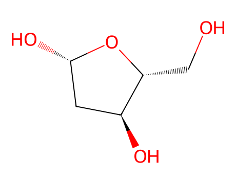
2-Désoxyriboseà dessiner
pas de nom commercial au cours
Oses des acides nucléiques — Pentose de l'ADN
Noyau : Furanose numéroté 1 à 5 (C1 anomère porte l'OH, C5 porte le CH2OH)
Structure-activité
Pas d'OH en 2 (deux H en position 2) ; OH en 3 conservé. C'est le sucre des désoxyribonucléosides et de l'ADN (p.182, p.186).
DésOXY = « dés-oxygéné » en 2 : un O de moins que le ribose (C5H10O4).
Bases puriques 2 molécules · 2 à dessiner
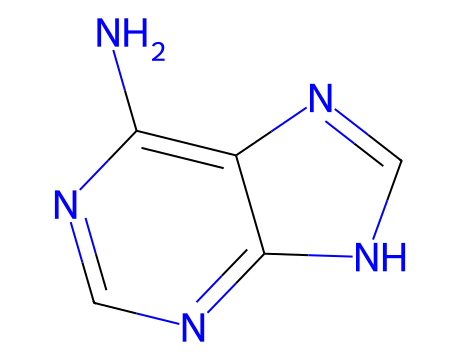
Adénineà dessiner
pas de nom commercial au cours
Bases puriques — Purine (base azotée de l'ADN et de l'ARN)
Noyau : Purine = pyrimidine accolée à un imidazole (numérotation 1 à 9, NH en 9)
Structure-activité
Purine portant un NH2 en 6 et aucun oxygène. Liée au sucre par l'azote N9 dans l'adénosine (p.183, p.185).
Adénine = Amine seule (NH2 en 6, pas de C=O) ; Guanine = Garde un C=O en 6 + NH2 en 2.
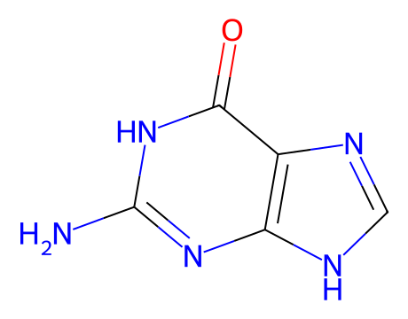
Guanineà dessiner
pas de nom commercial au cours
Bases puriques — Purine (base azotée de l'ADN et de l'ARN)
Noyau : Purine (pyrimidine + imidazole), numérotation 1 à 9
Structure-activité
Purine avec C=O en 6, NH en 1 et NH2 en 2. C'est la base que l'on retrouve intacte dans l'aciclovir, le ganciclovir, le penciclovir et leurs prodrogues (antimétabolites de la guanosine, p.192).
La Guanine est la base des « -ciclovir » : repère-la dans chaque antiherpétique.
Bases pyrimidiques 3 molécules · 3 à dessiner
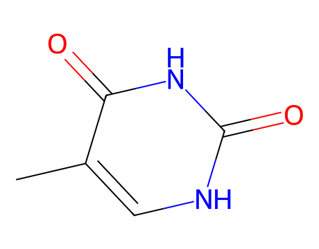
Thymineà dessiner
pas de nom commercial au cours
Bases pyrimidiques — Pyrimidine
Noyau : Pyrimidine (cycle à 6 atomes, N1 et N3), C=O en 2 et 4
Structure-activité
Identique à l'uracile mais avec un méthyle en 5 (p.183).
Thymine = uracile + CH3 en 5 (« T comme Tête méthylée »).
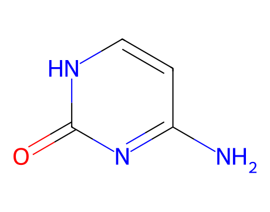
Cytosineà dessiner
pas de nom commercial au cours
Bases pyrimidiques — Pyrimidine
Noyau : Pyrimidine : NH2 en 4, C=O en 2, NH en 1
Structure-activité
Seule pyrimidine du tableau qui porte un NH2 (en 4) au lieu d'un C=O. Le cidofovir est un analogue de la cytidine : on y retrouve la cytosine intacte (p.193).
Cytosine = la pyrimidine « aminée » (comme l'adénine chez les purines).
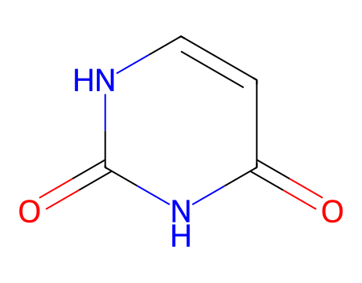
Uracileà dessiner
pas de nom commercial au cours
Bases pyrimidiques — Pyrimidine
Noyau : Pyrimidine : C=O en 2 et 4, NH en 1 et 3
Structure-activité
Pyrimidine la plus simple : deux C=O, aucun substituant en 5 (la thymine porte un méthyle en 5) (p.183).
Base + ribose = nucléoside (p.184). Ribose complet (2'-OH et 3'-OH). Liée à 1, 2 ou 3 phosphates en 5' : AMP, ADP, ATP (p.185). Le remdésivir est une prodrogue analogue nucléotidique de l'adénosine (p.190).
-ine = base (adénine) ; -osine = base + ose (adénosine).
Modèle des antiherpétiques : l'aciclovir, le ganciclovir et le penciclovir sont des antimétabolites de la guanosine (guanine conservée, ribose remplacé par une chaîne acyclique) (p.192).
Garde la guanine, « ouvre » le ribose : tu obtiens un -ciclovir.
Dans le tableau du cours (p.184), la « thymidine » est dessinée avec un ribose complet (2'-OH et 3'-OH) ; la liste p.186 la nomme thymine ribonucléoside ou ribothymidine (rare). Attention : dans l'usage courant, « thymidine » désigne souvent la désoxythymidine (dT).
Ribothymidine = RARE (p.186) ; la forme courante est la désoxythymidine.
Noyau : Uracile lié par N1 au C1' du 2-désoxyribose
Structure-activité
Comme l'uridine sans OH en 2' ; diffère de la désoxythymidine par l'absence du CH3 en 5 (p.184).
Nucléotides 1 molécule
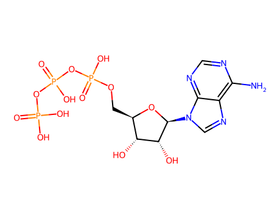
Adénosine triphosphateà reconnaître
pas de nom commercial au cours
Nucléotides — Nucléoside triphosphate (NTP)
Noyau : Adénine (N9) – ribose (C1') – chaîne de 3 phosphates en 5'
Structure-activité
Base (adénine) + ribose = nucléoside (adénosine) ; + 1 phosphate en 5' = nucléotide AMP ; + 2 = ADP ; + 3 = ATP (p.185). Le triphosphate de remdésivir agit comme un analogue de l'ATP (p.190).
N-M-P / N-D-P / N-T-P : Mono, Di, Tri phosphate.
Inhibiteurs du canal M2 (adamantanes) 2 molécules · 1 à dessiner
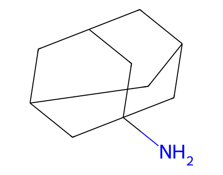
Amantadineà dessiner
pas de nom commercial au cours
Inhibiteurs du canal M2 (adamantanes) — Dérivé de l'adamantane (anti-influenza A et antiparkinsonien)
Noyau : Adamantane (tricyclo-décane en cage) portant un NH2 sur une tête de pont
Mécanisme : Inhiberait la pénétration du génome viral dans la cellule hôte : se fixe à la protéine-canal ionique M2 du virus influenza A (absente chez le type B). M2 régule le pH du virus et la conformation de l'hémagglutinine ; l'amantadine inhibe la fixation du virus à la cellule cible (modification de l'hémagglutinine) et la sortie des acides nucléiques hors de la capside (uncoating) (p.187). Dans la maladie de Parkinson, agit en augmentant la libération de dopamine (p.187).
Indications : Traitement prophylactique et curatif des affections à Influenza A (p.187) ; usage aujourd'hui très limité en raison des résistances (figure p.187), Maladie de Parkinson : antiparkinsonien mineur, seul dans les formes débutantes ou associé à un autre antiparkinsonien (p.187)
Structure-activité
Adamantane + NH2 directement sur la cage ; la rimantadine porte en plus un CH(CH3) entre la cage et le NH2 (p.188).
AMANTADINE = 2 casquettes : grippe A (canal M2) et PArkinson (dopamine).
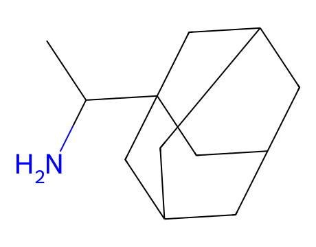
Rimantadineà reconnaître
pas de nom commercial au cours
Inhibiteurs du canal M2 (adamantanes) — Dérivé de l'amantadine
Noyau : Adamantane portant un groupement 1-aminoéthyle
Mécanisme : Comme l'amantadine : se fixe à la protéine-canal ionique M2 de la nucléocapside du virus influenza A → pas d'acidification, pas de décapsidation (p.187).
Indications : Traitement et prophylaxie de la grippe A, usage aujourd'hui très limité en raison des résistances (figure p.187)
Structure-activité
Dérivé de l'amantadine : un CH(CH3) s'intercale entre la cage adamantane et le NH2 (p.188).
RIMantadine = amantadine + une « RIM » (rallonge) CH-CH3.
Inhibiteurs de neuraminidase 2 molécules
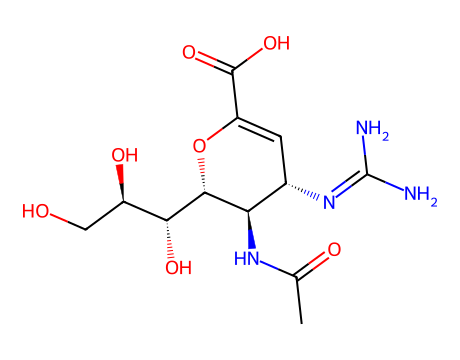
Zanamivirà reconnaître
pas de nom commercial au cours
Inhibiteurs de neuraminidase — Antigrippaux (influenza A et B), forme inhalée
Mécanisme : Inhibiteur de la neuraminidase (sialidase), glycohydrolase virale de surface qui scinde les liaisons des résidus d'acide sialique à la surface des cellules infectées et est essentielle à la libération du virion de la cellule hôte (p.188).
Indications : Traitement de l'infection due aux virus influenza A et B, administré préventivement ou en tout début de grippe (réduit sa gravité) (p.188)
Mécanisme : Prodrogue : hydrolyse de la fonction ester par des estérases hépatiques → acide carboxylique correspondant, inhibiteur de la neuraminidase (p.188).
Indications : Autrefois traitement et prophylaxie de la grippe ; n'est plus indiqué pour le traitement ou la prophylaxie de la grippe étant donné le rapport coûts-bénéfices négatif (p.188)
Structure-activité
Ester éthylique (prodrogue) + éther lipophile pentan-3-yle et NH2 à la place de la guanidine : actif per os, contrairement au zanamivir (p.188).
TAMIFLU = « T'as mi(s) la FLU » de côté : prodrogue ester, per os.
Mécanisme : Anticorps monoclonal humanisé dirigé contre le virus respiratoire syncytial (VRS) (p.189).
Indications : Prévention des infections des voies respiratoires inférieures à VRS chez les prématurés et les enfants de moins de 2 ans à haut risque (détresse respiratoire chronique, cardiopathie congénitale grave), pendant les périodes à risque (p.189)
PALIvizumab = PAs qu'une fois : 1 injection par mois (max 5).
Mécanisme : Se lie aux sous-unités F1 et F2 de la protéine de fusion (F) du VRS et bloque la protéine F dans la conformation de préfusion pour empêcher l'entrée du virus dans la cellule hôte (p.189).
Indications : Prévention des infections des voies respiratoires inférieures causées par le VRS chez les nouveau-nés et les nourrissons jusqu'à 1 an ; chez les enfants à haut risque, une administration est aussi recommandée au cours de la 2e année de vie (p.189)
NIRSévimab : « N'Injecte qu'une fois par Saison ».
Inhibiteurs de protéase Mpro (SARS-CoV-2) 1 molécule
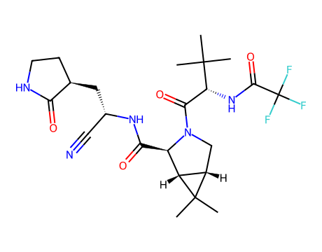
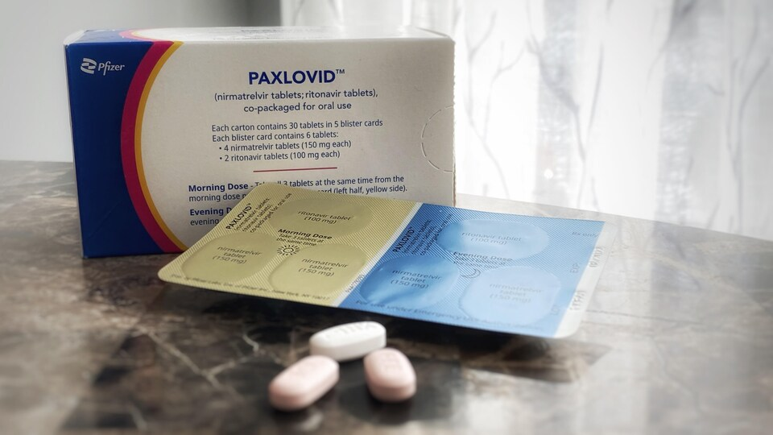
PAXLOVID® (+ ritonavir)
Nirmatrelvirà reconnaître
PAXLOVID® (+ ritonavir)
Inhibiteurs de protéase Mpro (SARS-CoV-2) — Inhibiteur peptidomimétique de la protéase 3CLpro (nsp5)
Mécanisme : Inhibiteur peptidomimétique de la protéase principale du SARS-CoV-2 (Mpro = 3CLpro = nsp5) ; bloque la réplication virale. Mpro est indispensable pour cliver les polyprotéines pp1a/pp1ab et libérer les protéines du complexe de réplication dont l'ARN polymérase virale (RdRp, nsp12) (p.190).
Indications : COVID-19 (p.190)
Structure-activité
Structure pseudo-peptidique (peptidomimétique) qui imite le substrat de la protéase ; porte un nitrile (C≡N) (p.190).
NirMaTRELvir = inhibiteur de la Mpro (M comme Main protease).
Analogues nucléotidiques (SARS-CoV-2) 1 molécule
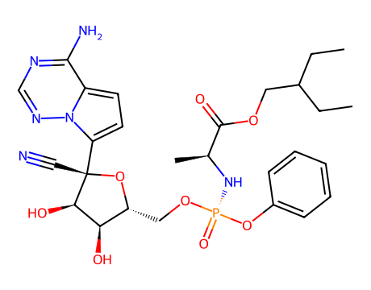
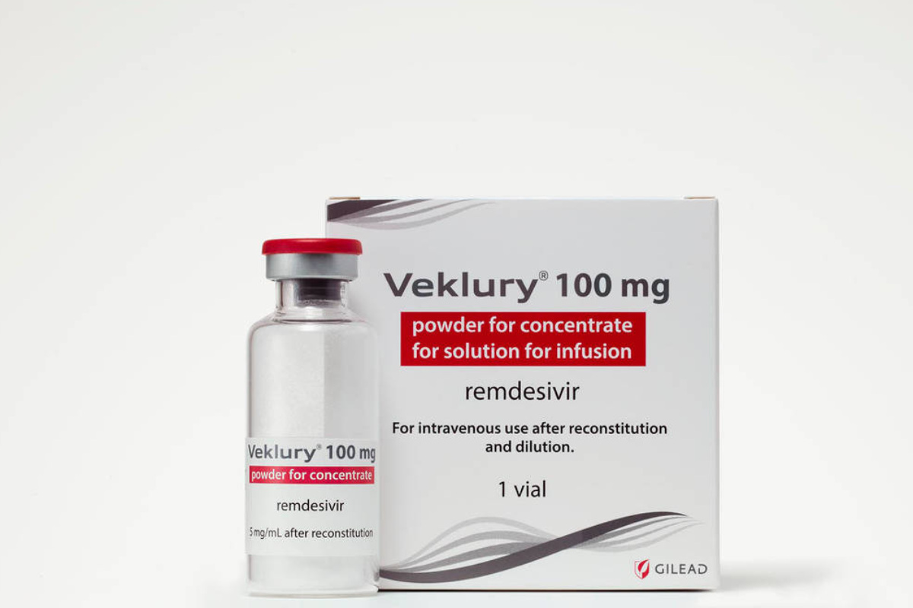
VEKLURY®
Remdésivirà reconnaître
VEKLURY®
Analogues nucléotidiques (SARS-CoV-2) — Prodrogue phosphoramidate analogue de l'adénosine
Noyau : C-nucléoside : pyrrolotriazine aminée (mime l'adénine) liée par un C au C1' d'un ribose portant un CN en 1' ; phosphoramidate (phénol + L-alaninate de 2-éthylbutyle) en 5'
Mécanisme : Métabolisé dans les cellules hôtes en nucléoside triphosphate pharmacologiquement actif ; le triphosphate de remdésivir agit comme un analogue de l'ATP et inhibe de manière compétitive l'ARN polymérase ARN-dépendante du SARS-CoV-2, aboutissant à une terminaison retardée de l'élongation de la chaîne d'ARN virale (p.190).
Indications : COVID-19 : les balises belges en milieu hospitalier ne lui accordent pas de place dans les formes sévères et une place très limitée dans les formes légères ou modérément sévères à risque d'évolution très sévère (p.191)
Structure-activité
Prodrogue analogue nucléotidique de l'adénosine : le phosphate est déjà présent mais masqué (phénoxy + ester d'alanine) pour pénétrer dans la cellule, puis métabolisé en triphosphate actif (p.190-191).
REMdésivir = REMplace l'ATP (analogue de l'adénosine) dans l'ARN viral.
Phosphonoformate (non nucléosidique) 1 molécule · 1 à dessiner
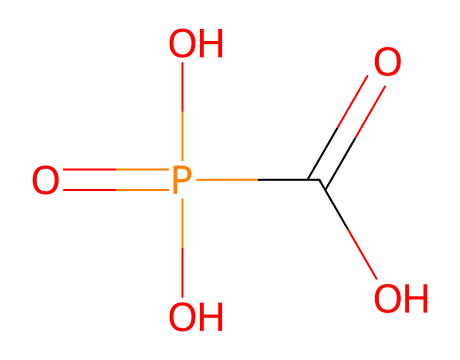
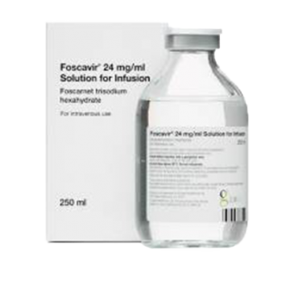
FOSCAVIR®
Foscarnet trisodiqueà dessiner
FOSCAVIR®
Phosphonoformate (non nucléosidique) — Inhibiteur direct de l'ADN polymérase et de la transcriptase inverse
Noyau : Phosphonoformate : groupe phosphonate lié directement à un carboxylate (sel trisodique, 3 Na+)
Mécanisme : Inhibe l'ADN polymérase des virus à ADN (groupe herpès, VHB) et inhibe de plus la transcriptase inverse des virus à ARN / rétrovirus (VIH) (p.191).
Indications : Infections à virus du groupe herpès (p.191)
Structure-activité
Ce n'est PAS un nucléoside : petite molécule P–C(=O)O, donc pas besoin de phosphorylation par la thymidine kinase. Seul antiviral du chapitre actif à la fois sur virus à ADN et à ARN (p.191).
FOSCarnet = PHOSphore + Carboxylate : le seul « non-nucléoside » qui frappe ADN ET ARN.
Analogues nucléosidiques (herpès) 1 molécule · 1 à dessiner
Analogues nucléosidiques (herpès) — Antimétabolites de la guanosine (acycliques)
Noyau : Guanine liée en N9 à une chaîne acyclique CH2-O-CH2-CH2-OH (ribose « ouvert »)
Mécanisme : Antimétabolite de la guanosine : phosphorylé en monophosphate par une enzyme d'origine virale, la thymidine kinase, puis en triphosphate par les kinases cellulaires ; c'est le triphosphate qui inhibe l'ADN polymérase virale (p.192).
Indications : Traitement de l'herpès viral, local ou systémique (p.192)
Structure-activité
Guanine intacte + chaîne acyclique (2-hydroxyéthoxy)méthyle : un seul OH (équivalent du 5'-OH), pas d'équivalent du 3'-OH. Ganciclovir = un CH2OH en plus ; penciclovir = O de la chaîne remplacé par CH2 (p.192).
A-CYCLO-vir = guanine « A-cyclique » : le ribose a perdu son cycle.
Analogues nucléosidiques (CMV) 1 molécule
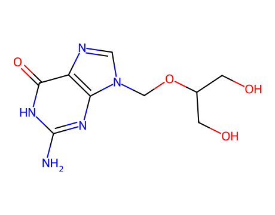
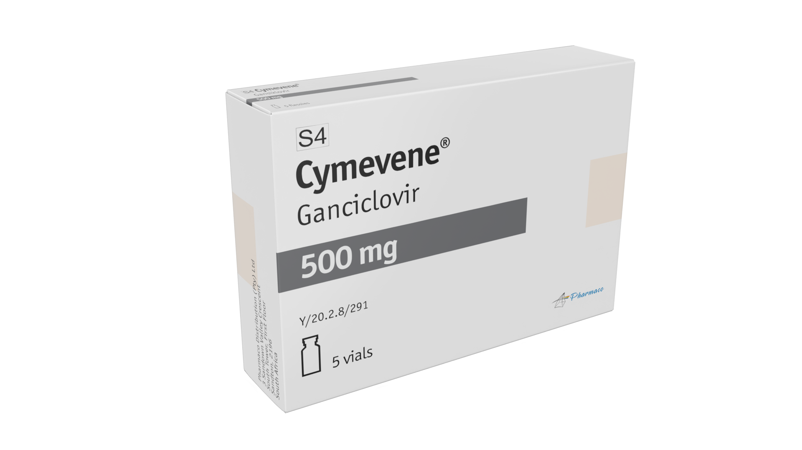
CYMEVENE®
Ganciclovirà reconnaître
CYMEVENE®
Analogues nucléosidiques (CMV) — Antimétabolite de la guanosine / analogue de la 2'-désoxyguanosine
Noyau : Guanine liée en N9 à une chaîne CH2-O-CH(CH2OH)2
Mécanisme : Phosphorylé en monophosphate par une kinase virale (thymidine kinase) puis en triphosphate par les kinases cellulaires ; le triphosphate inhibe l'ADN polymérase virale (p.192). Inhibe la réplication des virus du groupe herpès in vitro et in vivo (p.194).
Indications : Uniquement, compte tenu de sa toxicité, les infections graves à CMV (p.ex. atteinte d'organe) chez les patients immunodéprimés (p.194)
Structure-activité
Comme l'aciclovir mais avec un CH2OH supplémentaire (deux OH, qui miment le 3'-OH et le 5'-OH du sucre) : analogue de la 2'-désoxyguanosine (p.192, p.194).
GANciclovir = aciclovir + une « GANse » CH2OH en plus.
Analogues nucléosidiques (herpès) 3 molécules
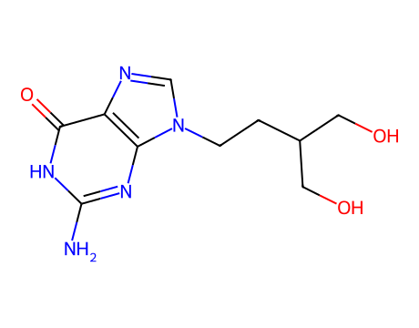
Penciclovirà reconnaître
pas de nom commercial au cours
Analogues nucléosidiques (herpès) — Antimétabolite de la guanosine
Noyau : Guanine liée en N9 à une chaîne carbonée CH2-CH2-CH(CH2OH)2 (sans O éther)
Mécanisme : Phosphorylé en monophosphate par la thymidine kinase virale puis en triphosphate par les kinases cellulaires ; le triphosphate inhibe l'ADN polymérase virale (p.192).
Indications : Herpès viral (p.192)
Structure-activité
Comme le ganciclovir mais l'oxygène éther de la chaîne est remplacé par un CH2 (p.192).
Analogues nucléosidiques (herpès) — Prodrogue du penciclovir
Noyau : Penciclovir dont les deux OH sont acétylés (diester acétate)
Mécanisme : Prodrogue du penciclovir (p.192).
Structure-activité
Diacétate du penciclovir (les deux CH2OH estérifiés par l'acide acétique) → prodrogue à meilleure biodisponibilité orale (p.192-193). Attention : le dessin du cours (p.193) porte un C=O en 6 sur la purine ; la structure réelle du famciclovir n'a pas d'oxygène en 6 (2-aminopurine), le SMILES suit la structure réelle.
FAMciclovir → donne la FAMille PENciclovir (prodrogue).
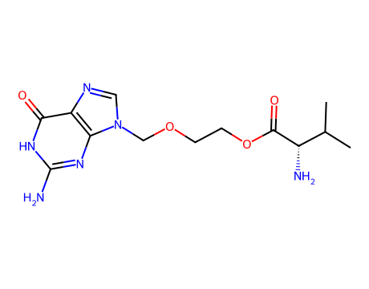
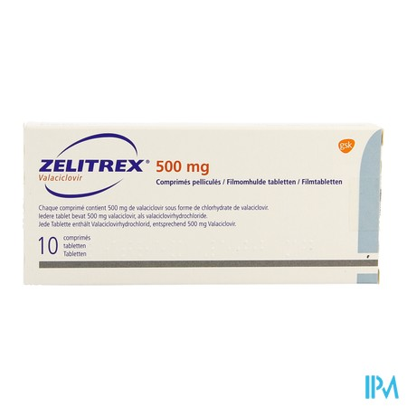
ZELITREX®
Valaciclovirà reconnaître
ZELITREX®, VALACICLOVIR SANDOZ®
Analogues nucléosidiques (herpès) — Prodrogue de l'aciclovir (ester de valine)
Noyau : Aciclovir dont l'OH terminal est estérifié par la L-valine
Mécanisme : Prodrogue de l'aciclovir (p.192).
Indications : Herpès (spectre comparable à l'aciclovir) (p.192)
Structure-activité
Ester de valine sur l'OH de l'aciclovir → meilleure biodisponibilité orale (p.192-193). NB : le texte p.192 écrit « ester formé à partir du ganciclovir et de la valine », mais le dessin p.193 montre bien la chaîne de l'aciclovir (c'est le valganciclovir qui dérive du ganciclovir).
Analogues nucléosidiques (CMV) — Analogue de la cytidine (phosphonate acyclique)
Noyau : Cytosine liée en N1 à une chaîne acyclique portant un CH2OH et un groupe CH2-O-CH2-P(O)(OH)2 (phosphonate)
Mécanisme : Analogue de la cytidine, actif après phosphorylation (p.193).
Indications : Rétinite à cytomégalovirus chez les immunodéficients (p.193)
Structure-activité
Base = cytosine (et non guanine) : c'est un analogue de la cytidine ; porte déjà un groupe phosphonate (p.193).
CIDOfovir = CYtidine + phosphonate : l'arme quand le CMV résiste au ganciclovir.
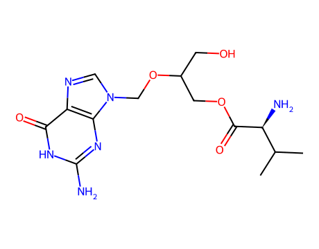
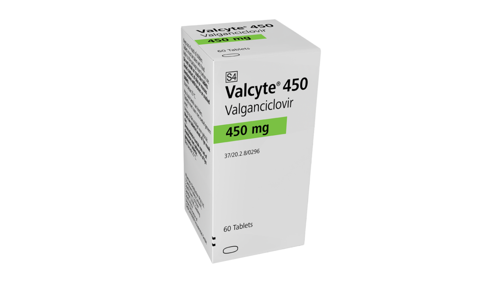
VALCYTE®
Valganciclovirà reconnaître
VALCYTE®
Analogues nucléosidiques (CMV) — Prodrogue du ganciclovir (ester de valine)
Noyau : Ganciclovir dont un des deux CH2OH est estérifié par la L-valine (partie valine en bleu dans le cours)
Mécanisme : Prodrogue : hydrolysée après absorption intestinale en ganciclovir (produit actif) + valine (p.194).
Indications : Uniquement, compte tenu de sa toxicité, les infections graves à cytomégalovirus (p.ex. atteinte d'organe) chez les patients immunodéprimés (p.194)
Structure-activité
L'estérification du ganciclovir par la valine en fait un substrat du transporteur peptidique PEPT1 → absorption intestinale fortement augmentée (biodisponibilité ~60 % contre ~6 % pour le ganciclovir à jeun) (p.194).
VALine + PEPT1 = de 6 % à 60 % (×10) de biodisponibilité.
Inhibiteurs de kinase UL97 (CMV) 1 molécule
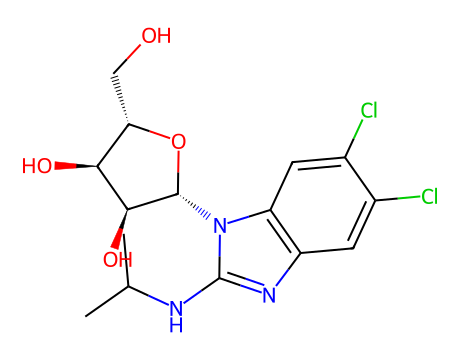
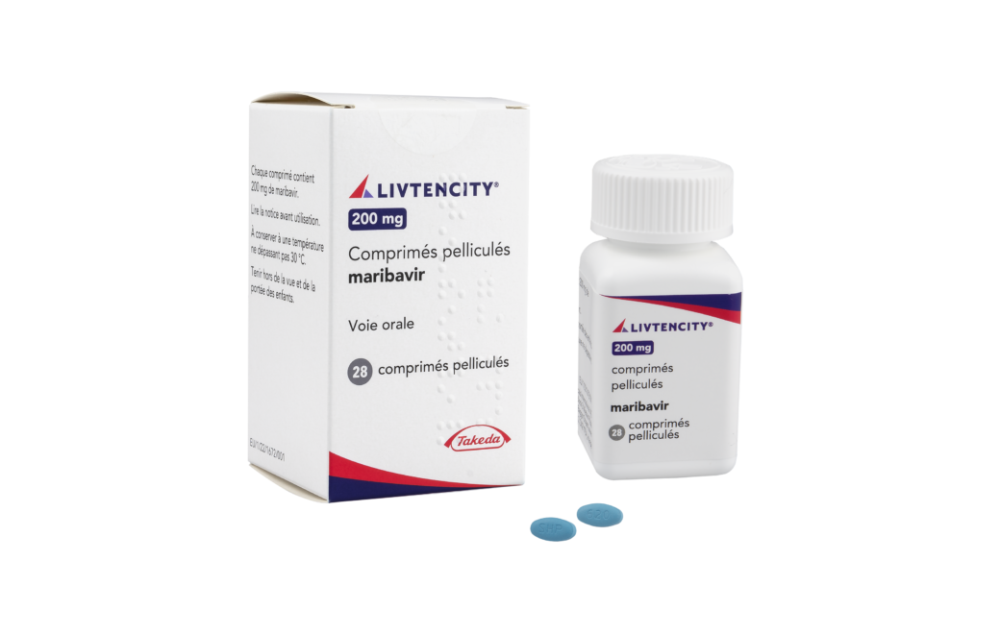
LIVTENCITY®
Maribavirà reconnaître
LIVTENCITY®
Inhibiteurs de kinase UL97 (CMV) — Benzimidazole riboside
Noyau : 5,6-dichloro-2-(isopropylamino)benzimidazole lié à un L-ribofuranose
Mécanisme : Inhibiteur compétitif de la protéine kinase UL97 ; l'inhibition se produit à la phase de réplication de l'ADN viral et inhibe la réplication et la maturation de l'ADN du CMV, l'encapsidation de l'ADN du CMV et la sortie nucléaire de l'ADN du CMV (p.194).
Indications : Antiviral contre le CMV (cité p.194, sans autre détail dans le cours)
Antirétroviraux (VIH), médicaments des hépatites B et C chroniques, antiviraux divers19 concepts · 22 molécules (0 à dessiner) · p. 195-213
Concepts à comprendre (19)
Classes d'antirétroviraux (VIH)
Contre le VIH (rétrovirus à ARN) on dispose d'inhibiteurs de la transcriptase réverse (analogues nucléosidiques, non nucléosidiques ou nucléotidiques), d'inhibiteurs des protéases, d'inhibiteurs d'entrée (attachement, antagonistes CCR5, fusion) et d'inhibiteurs d'intégrase.
Pourquoi peut-on frapper le VIH à autant d'étapes différentes ?
Parce que son cycle comporte plusieurs étapes propres au virus : attachement/fusion, transcription inverse de l'ARN en ADN, intégration de cet ADN dans le génome de l'hôte et maturation des protéines par la protéase ; chacune est une cible (p.195, 205).
Plurithérapie / trithérapie
Le VIH devient rapidement résistant : les antirétroviraux sont toujours associés. Selon le stade clinique, la charge virale et les CD4, on associe deux INTI à un inhibiteur de protéase, à un INNTI ou parfois à un troisième INTI ; un inhibiteur de fusion peut s'y ajouter. La trithérapie diminue morbidité, mortalité et hospitalisations.
Pourquoi n'utilise-t-on jamais un antirétroviral seul ?
Parce que le VIH devient rapidement résistant à un médicament utilisé seul ; l'association de plusieurs mécanismes limite l'émergence de résistances (p.195).
Mécanisme des INTI : triphosphorylation et terminaison de chaîne
Les analogues de nucléosides sont transformés in situ en triphosphates qui bloquent le site de la transcriptase inverse. S'ils sont incorporés dans le brin d'ADN naissant, l'élongation s'arrête car ils n'ont pas de 3'-OH pour former le lien phosphate avec le nucléotide suivant.
Pourquoi l'absence de 3'-OH arrête-t-elle la synthèse de l'ADN viral ?
Parce que chaque nouveau nucléotide est lié par un pont phosphate au 3'-OH du précédent ; sans 3'-OH (N3 de l'AZT, S de la lamivudine, sucre didésoxy de la DDI), aucun nucléotide ne peut être ajouté (p.196).
Inhibiteur nucléosidique vs nucléotidique de la transcriptase inverse
Un inhibiteur nucléosidique (zidovudine, lamivudine…) doit être triphosphorylé dans la cellule. Un inhibiteur nucléotidique comme le ténofovir est un analogue nucléosidique monophosphate : il porte déjà le groupe phosphoré. Il est donné sous forme de prodrogue (ténofovir disoproxil ; l'adéfovir dipivoxil de même).
Pourquoi le ténofovir est-il administré sous forme de ténofovir disoproxil ?
Parce que le ténofovir lui-même (analogue monophosphate) est utilisé sous forme de prodrogue : les esters disoproxil sont clivés pour libérer le ténofovir actif (p.199).
VHB : ADN polymérase à activité transcriptase inverse
Le virus de l'hépatite B est un virus à ADN (Hepadnaviridae) dont le nucléocapside contient l'ADN viral et une ADN polymérase ayant une activité de transcriptase inverse. C'est l'un des rares virus, en dehors des rétrovirus, qui utilise la transcription inverse dans sa réplication.
Pourquoi des antirétroviraux comme la lamivudine ou le ténofovir sont-ils actifs contre l'hépatite B ?
Parce que le VHB, bien que virus à ADN, se réplique via une ADN polymérase à activité transcriptase inverse : les inhibiteurs de la transcriptase inverse la bloquent aussi (p.199, 208).
Hépatite B chronique (active) vs aiguë
Il n'existe pas de traitement spécifique de l'hépatite B aiguë (soins de confort, équilibre nutritionnel, réhydratation). L'hépatite B chronique (active) peut être traitée par des antiviraux oraux, qui ralentissent la cirrhose, réduisent les cancers du foie et améliorent la survie. Molécules : ténofovir, entécavir, lamivudine (ZEFFIX®), adéfovir dipivoxil, interférons α-2a/α-2b et peginterféron α-2a.
Pourquoi l'OMS préfère-t-elle le ténofovir ou l'entécavir dans l'hépatite B chronique ?
Ce sont les plus puissants pour supprimer le VHB, ils entraînent rarement une pharmacorésistance, se prennent en un comprimé par jour et ont peu d'effets secondaires, donc un suivi limité (p.208).
Prévention de l'hépatite B par la vaccination
On peut prévenir l'hépatite B avec un vaccin sûr et efficace. L'hépatite B est un risque professionnel important pour le personnel de santé ; transmission sexuelle, par injection, transfusion à risque, de la mère à l'enfant et par contact étroit.
Pourquoi la vaccination contre l'hépatite B concerne-t-elle particulièrement les soignants ?
Parce que l'hépatite B se transmet notamment par le sang et constitue un risque professionnel important pour le personnel de santé (p.208).
Inhibiteurs de protéase du VIH : peptidomimétiques
En inhibant la protéase du VIH, ils empêchent la transformation des polypeptides précurseurs gag et gag/pol en protéines structurales et en enzymes lors de l'étape finale de maturation virale. La plupart sont des peptidomimétiques ; on les associe le plus souvent à deux INTI. Le lopinavir n'existe qu'avec le ritonavir (KALETRA®).
Pourquoi ces molécules ressemblent-elles à des peptides ?
Parce qu'elles miment le substrat peptidique (gag, gag/pol) de la protéase virale pour occuper son site et bloquer le clivage nécessaire à la maturation (p.201).
Entrée du VIH : gp120, gp41, CD4, CCR5 et CXCR4
L'entrée comporte une fixation puis une fusion des membranes. La gp120 virale intervient dans la fixation au récepteur CD4, la gp41 dans la fusion ; les co-récepteurs CCR5 et CXCR4 sont des récepteurs aux chémokines du lymphocyte T. Les inhibiteurs d'entrée se divisent en inhibiteurs de fixation (gp120 ou CD4, ex. temsavir lié à la sous-unité gp120), antagonistes des co-récepteurs (maraviroc) et inhibiteurs de fusion.
Pourquoi le temsavir empêche-t-il l'infection des cellules ?
Parce qu'il se lie directement à la sous-unité gp120 et bloque son interaction avec le récepteur CD4, première étape (fixation) de l'entrée du virus (p.205).
Tropisme du VIH (R5, X4, R5/X4) et prescription du maraviroc
Le tropisme est défini par le co-récepteur utilisé : R5 (CCR5 exclusivement), X4 (CXCR4 exclusivement), R5/X4 (double tropisme). Le maraviroc bloque CCR5 et empêche l'interaction gp120–CCR5, donc l'entrée du VIH. Sa prescription nécessite la connaissance préalable du tropisme du virus.
Pourquoi faut-il connaître le tropisme avant de prescrire CELSENTRI® ?
Parce que le maraviroc ne bloque que CCR5 : un virus qui utilise CXCR4 pourrait encore entrer dans la cellule ; il est proposé pour le VIH-1 à tropisme CCR5 (p.206-207).
Intégrase du VIH
L'intégrase est l'enzyme virale qui intègre l'ADN viral (obtenu à partir de l'ARN viral par la transcriptase inverse) dans le génome de l'hôte, étape indispensable à la multiplication du virus. Inhibiteurs : bictégravir, cabotégravir (VOCABRIA®), dolutégravir (TIVICAY®), elvitégravir, raltégravir (ISENTRESS®) ; bictégravir et elvitégravir uniquement en associations fixes.
Pourquoi le raltégravir reste-t-il utile chez les patients résistants aux autres antiviraux ?
Parce qu'il agit sur une cible différente (l'intégrase), étape indispensable que ne visent ni les inhibiteurs de transcriptase inverse ni ceux de protéase (p.207).
Prodrogues dans ce chapitre
Plusieurs antiviraux sont des prodrogues : ténofovir disoproxil (libère le ténofovir), adéfovir dipivoxil (adéfovir), fosamprénavir (amprénavir), fostemsavir (temsavir, par clivage du groupe phosphonooxyméthyle) et sofosbuvir.
Pourquoi le fostemsavir est-il inactif tel quel ?
Parce que c'est une prodrogue sans activité antivirale significative : il doit être hydrolysé in vivo (clivage du groupe phosphonooxyméthyl) en temsavir actif (p.205).
VHC : un petit virus à ARN
Le virus de l'hépatite C est un petit virus à ARN (environ 60 nm), enveloppé, à capside icosaédrique, dont le génome est un ARN monocaténaire linéaire de polarité positive. Il est transmis par le sang (injections à risque, matériel mal stérilisé, transfusions non dépistées).
Pourquoi le sofosbuvir vise-t-il une ARN polymérase et non une transcriptase inverse ?
Parce que le VHC est un virus à ARN qui réplique son ARN via son ARN polymérase NS5B, sans étape de transcription inverse (contrairement au VIH et au VHB) (p.210-211).
Hépatite C : infection aiguë et chronique
Le VHC peut entraîner une infection hépatique aiguë et une infection chronique de gravité variable, d'une forme bénigne de quelques semaines à une maladie grave à vie. Chez beaucoup de porteurs chroniques, l'infection évolue vers la cirrhose ou le cancer du foie.
Pourquoi traiter l'hépatite C chronique même si elle est peu symptomatique ?
Parce qu'elle peut évoluer vers la cirrhose ou le cancer du foie ; les antiviraux guérissent environ 90 % des sujets et réduisent ce risque (p.210).
Pas de vaccin contre l'hépatite C
Actuellement, il n'existe pas de vaccin contre l'hépatite C, mais la recherche dans ce domaine se poursuit. À l'inverse, il existe un vaccin sûr et efficace contre l'hépatite B.
Pourquoi la prévention de l'hépatite C repose-t-elle sur la sécurité des injections et des transfusions ?
Parce qu'il n'existe pas de vaccin et que le VHC se transmet par le sang (injections à risque, mauvaise stérilisation, sang non dépisté) (p.210).
Antiviraux à action directe (AAD) dans l'hépatite C
Les médicaments antiviraux guérissent environ 90 % des sujets infectés par le VHC. L'OMS recommande de traiter tous les patients avec des schémas comprenant des AAD (elbasvir, glécaprévir, grazoprévir, lédipasvir, pibrentasvir, sofosbuvir, télaprévir, velpatasvir, voxilaprévir), inhibiteurs de protéines spécifiques du VHC, utilisés en association entre eux ou, en cas d'échec, avec le peginterféron et la ribavirine.
Pourquoi parle-t-on d'action 'directe' ?
Parce qu'ils inhibent directement des protéines spécifiques du VHC (ex. polymérase NS5B pour le sofosbuvir), contrairement à la ribavirine (analogue nucléosidique à large spectre) ou aux interférons (cytokines) (p.211, 213).
Ribavirine : antiviral à large spectre
La ribavirine est un analogue nucléosidique de la guanosine à large spectre : elle est active in vitro contre de nombreux virus à ADN ou à ARN (herpès, grippe, VIH…). Dans l'hépatite C, on l'associe en cas d'échec thérapeutique.
Pourquoi la ribavirine n'est-elle pas classée parmi les AAD ?
Parce qu'elle n'inhibe pas une protéine spécifique du VHC : c'est un analogue nucléosidique de la guanosine à large spectre, actif sur de nombreux virus (p.211).
Vidarabine et fludarabine : antimétabolites de l'adénosine
Après triple phosphorylation, la vidarabine (non commercialisée en Belgique) inhibe l'ADN polymérase comme antimétabolite de l'adénosine ; la fludarabine aussi. Ce sont des analogues de base purique où le ribose est remplacé par un arabinose. La fludarabine est principalement utilisée comme anticancéreux (LLC à cellules B).
Pourquoi un 'antiviral' comme la fludarabine sert-il surtout en cancérologie ?
Parce qu'en inhibant l'ADN polymérase comme antimétabolite de l'adénosine, elle bloque aussi la synthèse d'ADN des cellules tumorales ; elle est utilisée dans la leucémie lymphoïde chronique à cellules B (p.212).
Interférons et pégylation
Les interférons sont des protéines du groupe des cytokines, sécrétées par les cellules infectées par des virus, qui s'opposent à leur prolifération ; ils sont produits par génie génétique et ont des propriétés antivirales, antiprolifératives et immunomodulatrices. Le PEG conjugué à l'interféron alfa-2a donne le peginterféron alfa-2a (PEGASYS®), indiqué dans l'hépatite B et en association dans l'hépatite C.
Pourquoi les interférons ne peuvent-ils pas avoir de SMILES ou être synthétisés comme les petites molécules ?
Parce que ce sont des protéines (cytokines), produites par ingénierie génétique (p.213).
Inhibiteurs de protéase du VIH — Peptidomimétique (bis-thiazole)
Noyau : Hydroxy-1,6-diphénylhexane-diamine (cœur peptidomimétique) + valine + deux thiazoles
Mécanisme : Inhibe la protéase du VIH : empêche la transformation des précurseurs gag et gag/pol (p.201).
Indications : Infection par le VIH ; associé au lopinavir dans KALETRA® (p.201), En association au nirmatrelvir (PAXLOVID®), à faible dose, comme ralentisseur du métabolisme (p.190)
Structure-activité
Peptidomimétique (p.201) reconnaissable à ses deux cycles thiazole (un à chaque extrémité) ; même cœur diphénylhexane hydroxylé que le lopinavir (p.202-203).
RiTONavir = deux Thiazoles (S) : 'Ri-TOn' comme deux 'T'.
INTI 6 molécules
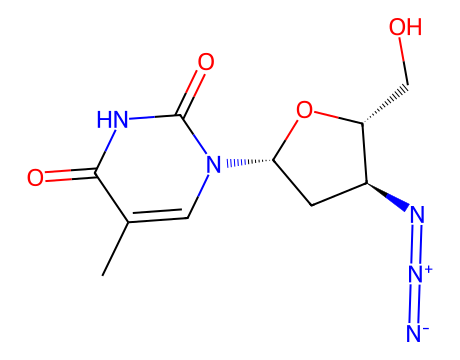
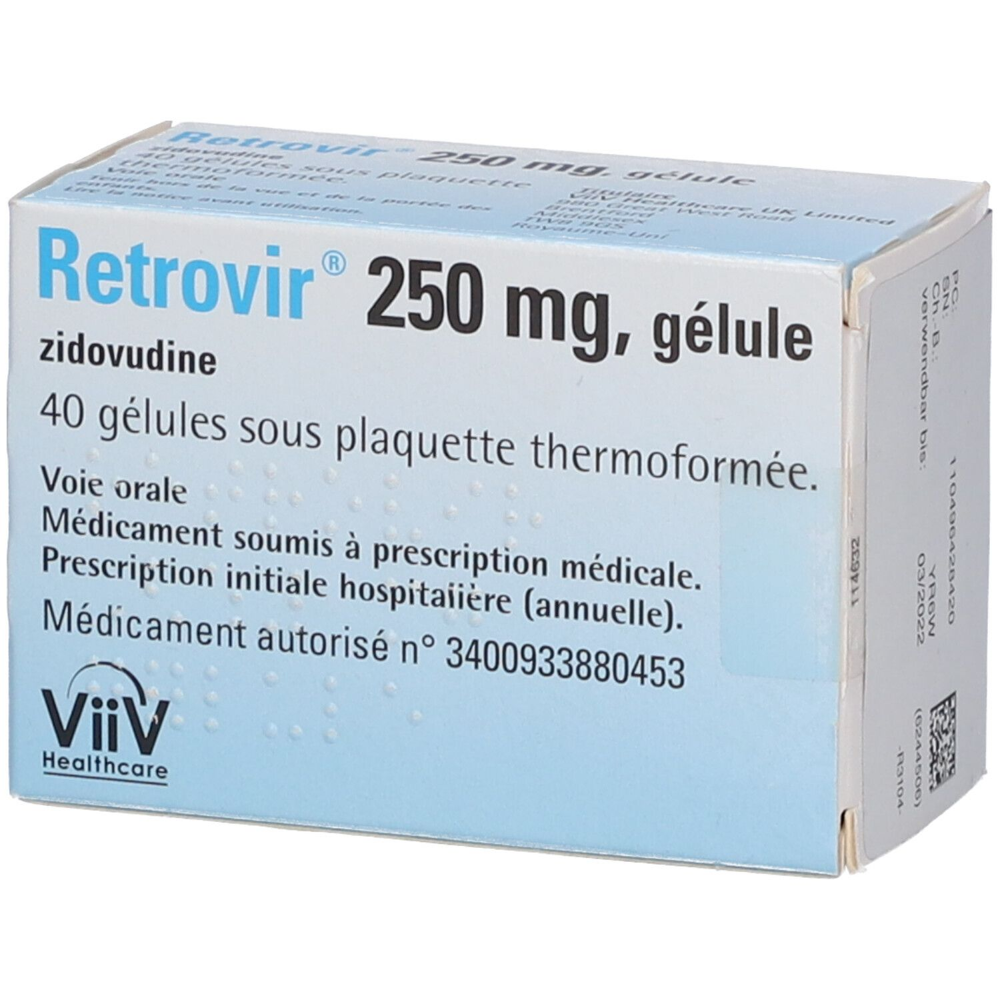
RETROVIR®
Zidovudineà reconnaître
RETROVIR®, COMBIVIR® (+ lamivudine)
INTI — Analogue de la thymidine (pyrimidique)
Noyau : Thymidine (thymine + 2'-désoxyribose) dont le 3'-OH est remplacé par un groupe azido N3
Mécanisme : Transformé in situ en nucléoside triphosphate qui bloque le site de la transcriptase inverse où se lient les nucléosides triphosphates physiologiques ; s'il est incorporé au brin d'ADN naissant, l'extension s'arrête car il n'a pas de 3'-OH (p.196).
Indications : Infection par le VIH, toujours en association (bi- ou trithérapie) (p.195-196)
Structure-activité
Le N3 (en rouge dans le cours) remplace le 3'-OH de la thymidine : sans 3'-OH, pas de liaison phosphate avec le nucléotide suivant, donc arrêt de l'élongation du brin d'ADN (p.196-197).
AZT = Azido-Thymidine : le N3 prend la place du 3'-OH, la chaîne s'arrête net.
Didanosineà reconnaître
pas de nom commercial au cours
INTI — Analogue nucléosidique purique (inosine)
Noyau : Hypoxanthine (base de l'inosine) + 2',3'-didésoxyribose
Mécanisme : Analogue nucléosidique transformé in situ en triphosphate qui inhibe la transcriptase inverse et arrête l'élongation de l'ADN viral (absence de 3'-OH) (p.196).
Indications : Infection par le VIH, en association (p.195-196)
Structure-activité
Sucre sans aucun OH en 2' ni en 3' (didésoxy) : pas de 3'-OH, donc terminaison de chaîne (p.196-197).
DDI = DiDésoxy-Inosine : deux 'dé', zéro OH sur le cycle.
Noyau : Cytosine + cycle 1,3-oxathiolane (un S remplace le C3' du sucre)
Mécanisme : Inhibiteur nucléosidique de la transcriptase inverse : transformé en triphosphate, bloque la transcriptase inverse et arrête l'élongation de l'ADN (p.196, 209). Le VHB possède une ADN polymérase à activité transcriptase inverse, ce qui explique son activité anti-VHB (p.199).
Indications : Infection par le VIH, en association (EPIVIR®) (p.196), Hépatite B chronique active (ZEFFIX®), parfois en association à l'interféron (p.196, 209)
Structure-activité
Le soufre (en rouge dans le cours) remplace le carbone 3' : pas de 3'-OH. L'emtricitabine est le dérivé proche portant un F en 5 de la cytosine (p.197-198).
LamivuDINE et son S dans le cycle : 'S comme Sida et... Sérologie B' (VIH + VHB).
EMTRIVA®
Emtricitabineà reconnaître
EMTRIVA®
INTI — Analogue de la cytidine (oxathiolane)
Noyau : 5-fluorocytosine + cycle 1,3-oxathiolane
Mécanisme : Inhibiteur nucléosidique de la transcriptase inverse (activé en triphosphate, terminaison de chaîne) (p.196).
Indications : Infection par le VIH, en association (p.195-196)
Structure-activité
Dérivé proche de la lamivudine : même squelette oxathiolane, avec un atome de fluor en position 5 de la cytosine (p.196, 198).
EmtriciTABINE = lamivudine + F : 'E-F' comme Emtricitabine-Fluor.
ZIAGEN®
Abacavirà reconnaître
ZIAGEN®, KIVEXA® (+ lamivudine)
INTI — Analogue nucléosidique purique carbocyclique
Noyau : Purine 6-cyclopropylamino (2-amino) reliée à un cyclopentène portant un CH2OH (carbocycle : pas d'oxygène dans le 'sucre')
Mécanisme : Inhibiteur nucléosidique de la transcriptase inverse virale (p.198).
Indications : SIDA, en combinaison avec d'autres antirétroviraux (p.198)
Structure-activité
Dérivé de nucléoside purique (p.198) : le 'sucre' est un cyclopentène (carbocycle, sans O) sans 3'-OH ; groupe cyclopropylamino sur la purine. Remarque : le dessin du cours ne montre pas le NH2 en position 2 de la purine (le SMILES donne la structure réelle).
ABACAVIR : un petit triangle (cyclopropyle) sur la purine, comme un 'A' posé dessus.
BARACLUDE®
Entécavirà reconnaître
BARACLUDE®
INTI — Analogue de la guanosine (hépatite B)
Noyau : Guanine + cyclopentane portant un méthylène exocyclique (=CH2), un OH et un CH2OH
Mécanisme : Après métabolisation en dérivé triphosphate, inhibe l'ADN polymérase du VHB (p.198) ; inhibiteur nucléosidique de la transcriptase inverse (p.209).
Indications : Exclusivement l'hépatite B chronique active (p.209)
Structure-activité
Analogue structural de la guanosine (p.198) : le ribose est remplacé par un cyclopentane à méthylène exocyclique (carbocycle). Dérivé de nucléoside purique, comme l'abacavir (p.198).
BARACLUDE = 'barrière' contre le VHB : l'entécavir, raté contre l'herpès, champion contre l'hépatite B.
INTI nucléotidiques 2 molécules
VIREAD®
Ténofovir disoproxilà reconnaître
VIREAD®
INTI nucléotidiques — Analogue nucléotidique de l'adénosine (prodrogue)
Noyau : Adénine + chaîne acyclique (propyl méthylé) + phosphonate estérifié par deux groupes isopropyloxycarbonyloxyméthyle (disoproxil)
Mécanisme : Inhibiteur nucléotidique de la transcriptase inverse (p.199, 210).
Indications : Infection par le VIH (toujours en association ; aussi dans certaines associations fixes) (p.199), Hépatite B chronique active (parfois en association à l'interféron) (p.199, 210)
Structure-activité
Inhibiteur nucléotidique = analogue nucléosidique monophosphate (p.199) : il porte déjà le groupe phosphoré. Administré sous forme de prodrogue (esters disoproxil). Se distingue de l'adéfovir dipivoxil par le CH3 sur la chaîne et par les esters carbonate d'isopropyle (au lieu de pivalate).
TénofoVIR disoPROXIL : un PRO(drogue) qui fait VIH + VHB.
Adéfovir dipivoxilà reconnaître
pas de nom commercial au cours
INTI nucléotidiques — Analogue nucléotidique de l'adénosine monophosphate (prodrogue)
Noyau : Adénine + chaîne éthoxyméthyle acyclique + phosphonate estérifié par deux pivaloyloxyméthyles (dipivoxil)
Mécanisme : Analogue nucléotidique de l'AMP (prodrogue de l'adéfovir) (p.208).
Indications : Exclusivement le traitement de l'hépatite B chronique active (p.208)
Structure-activité
Prodrogue de l'adéfovir, analogue nucléotidique de l'adénosine monophosphate (p.208). Comme le ténofovir disoproxil, mais sans CH3 sur la chaîne et avec des esters pivaliques.
Mécanisme : Inhibe la protéase du VIH : empêche la transformation des précurseurs gag et gag/pol en protéines structurales et enzymes lors de la maturation virale (p.201).
Indications : Infection par le VIH, le plus souvent en association à deux INTI (p.201)
Structure-activité
Peptidomimétique (p.201) avec un pont hydrazine N–NH et un biphényle-pyridine. Attention : les extrémités dessinées dans le cours (p.204) diffèrent de la structure réelle (deux tert-leucines N-méthoxycarbonylées) ; le SMILES donne la structure réelle.
ATAZAnavir : le 'AZA' rappelle l'aza-peptide (le N–N).
PREZISTA®
Darunavirà reconnaître
PREZISTA®, DARUNAVIR VIATRIS®
Inhibiteurs de protéase du VIH — Peptidomimétique sulfonamide (bis-THF)
Mécanisme : Inhibe la protéase du VIH : empêche la maturation des précurseurs gag et gag/pol (p.201).
Indications : Infection par le VIH, le plus souvent en association à deux INTI (p.201)
Structure-activité
Même squelette que l'amprénavir (p.203) mais le tétrahydrofurane est remplacé par un bis-tétrahydrofurane (cycle supplémentaire dessiné en bleu dans le cours).
DARUnavir = amprénavir avec un DEUXième furane (bis-THF).
Mécanisme : Inhibe la protéase du VIH : empêche la maturation des précurseurs gag et gag/pol (p.201).
Indications : Infection par le VIH (p.201)
Structure-activité
Même cœur diphénylhexane hydroxylé que le ritonavir, mais extrémités différentes : urée cyclique (tétrahydropyrimidin-2-one) et 2,6-diméthylphénoxyacétamide (p.203).
LOPINAVIR ne sort jamais seul : toujours en KALETRA avec son pote ritonavir.
Inhibiteurs de l'attachement 1 molécule
RUKOBIA®
Fostemsavirà reconnaître
RUKOBIA®
Inhibiteurs de l'attachement — Prodrogue phosphonooxyméthyle (temsavir)
Noyau : Azaindole (pyrrolopyridine) méthoxylé, méthyltriazole, céto-amide de benzoylpipérazine, groupe phosphonooxyméthyle sur le N
Mécanisme : Le temsavir se lie directement à la sous-unité gp120 et inhibe sélectivement l'interaction entre le virus et les récepteurs CD4, empêchant l'entrée du virus dans les cellules (p.204-205).
Indications : Adultes infectés par le VIH-1 multirésistant, chez qui les autres schémas ne sont plus efficaces, en association avec d'autres antirétroviraux (p.204)
Structure-activité
Le groupe phosphonooxyméthyle (–CH2–O–PO3H2) en fait une prodrogue sans activité antivirale significative ; son clivage in vivo libère le temsavir actif (p.205).
FOStemsavir : le 'FOS' = le phosphate qu'on coupe pour libérer le temsavir.
Mécanisme : Antagoniste du co-récepteur CCR5 : empêche l'interaction entre la gp120 et le CCR5, et en conséquence l'entrée du VIH dans la cellule (p.206).
Indications : Infection par le VIH-1 ayant un tropisme CCR5, en association à d'autres antirétroviraux (p.206)
Structure-activité
Reconnaissable au cyclohexane difluoré (CF2), au bicycle tropane et au triazole (p.206).
MARAVIROC bloque la porte R5 : 'CELSENTRI' = 'c'est l'entrée' qu'on ferme.
Noyau : Pyrimidinone N-méthylée hydroxylée (dessinée en sel de potassium) + 4-fluorobenzylcarboxamide + méthyl-1,3,4-oxadiazole
Mécanisme : Inhibe l'intégrase du VIH, enzyme qui intègre l'ADN viral (obtenu à partir de l'ARN viral par la transcriptase inverse) dans le génome de l'hôte, étape indispensable à la multiplication du virus (p.207).
Indications : Infection par le VIH ; particulièrement intéressant chez les malades devenus résistants aux autres antiviraux (p.207)
Structure-activité
Structure dessinée sous forme de sel de potassium (O− K+) dans le cours (p.207) ; motif hydroxy-oxo-pyrimidine-carboxamide + 4-fluorobenzyle.
Mécanisme : Inhibiteur nucléotidique de l'ARN polymérase du VHC : inhibe la polymérase NS5B et ne semble pas agir sur l'ADN ou l'ARN polymérase humaine (p.211).
Indications : Hépatite C chronique, en association (p.211)
Structure-activité
Prodrogue (p.211) : le phosphate porte un phénoxy et un ester d'alanine (phosphoramidate) ; sucre portant F et CH3 en 2'.
Antiviraux à action directe (VHC) — Inhibiteur de protéine spécifique du VHC (NS5A selon la figure p.212)
Noyau : Fluorène 9,9-difluoré central reliant un imidazole et un benzimidazole, chacun porteur d'un hétérocycle azoté acylé par une valine N-méthoxycarbonylée
Mécanisme : Inhibiteur de protéines spécifiques du VHC de dernière génération (le texte p.211 parle d'inhibiteur de protéases ; la figure p.212 le classe comme inhibiteur NS5A).
Indications : Hépatite C chronique, avec le sofosbuvir (HARVONI®) (p.211)
Structure-activité
Grande molécule quasi symétrique : fluorène difluoré au centre, deux 'bras' valine-carbamate aux extrémités (p.212).
LédiPASVIR : '-asvir' = NS5A ; HARVONI = 'Harmonie' de deux : sofosbuvir + lédipasvir.
Analogues nucléosidiques à large spectre 1 molécule
Ribavirineà reconnaître
pas de nom commercial au cours
Analogues nucléosidiques à large spectre — Analogue nucléosidique de la guanosine (triazole-carboxamide riboside)
Noyau : 1,2,4-triazole-3-carboxamide relié à un ribose complet (2'-OH et 3'-OH présents)
Mécanisme : Analogue nucléosidique de la guanosine à large spectre antiviral (p.211).
Indications : Hépatite C : en association avec les AAD ou en cas d'échec thérapeutique, avec le peginterféron (p.211)
Structure-activité
Pas de vraie base purique : un simple triazole carboxamide sur un ribose intact ; analogue nucléosidique de la guanosine (p.211).
RIBAvirine : un RIBose intact + un triazole, et un spectre très large.
Analogues puriques (arabinosides) 1 molécule
Fludarabineà reconnaître
FLUDARABINE TEVA®
Analogues puriques (arabinosides) — Antimétabolite de l'adénosine (2-fluoro-adénine + arabinose)
Noyau : 2-fluoro-adénine + arabinose
Mécanisme : Comme la vidarabine : après triple phosphorylation, inhibe l'ADN polymérase en agissant comme antimétabolite de l'adénosine (p.212).
Indications : Principalement anticancéreux : leucémie lymphoïde chronique (LLC) à cellules B chez l'adulte ayant des réserves médullaires suffisantes (p.212), Leucémies lymphoïdes chroniques à cellules B
Structure-activité
Analogue de base purique : F en position 2 de l'adénine, et ribose remplacé par un arabinose (2'-OH inversé, en rouge dans le cours) ; la vidarabine a le même arabinose sans le F (p.212-213).
Interférons — Cytokines produites par génie génétique
Noyau : Protéines (cytokines)
Mécanisme : Sécrétés par les cellules infectées par les virus, ils s'opposent à leur prolifération ; propriétés antivirales, antiprolifératives et immunomodulatrices (p.213).
Indications : Hépatite B chronique active (interférons α-2a et α-2b, peginterféron α-2a) (p.208), Hépatite C en association, notamment en cas d'échec (p.211, 213)
Structure-activité
Substances protéiques du groupe des cytokines, produites par ingénierie génétique (p.213).
INTERFÉRONS : ils 'interfèrent' avec le virus — antiviraux, antiprolifératifs, immunomodulateurs (les 3 A-A-I).
Ce que le prof a dit en cours
Rappel de base : nucléoside (non phosphaté) vs nucléotide (phosphaté) ; bases, ribose et 2-désoxyribose à dessiner.
Antimétabolites : ils ressemblent aux nucléosides, sont triphosphorylés et bloquent la polymérase (terminateurs de chaîne).
VIH : le virus pour lequel on a le plus de cibles (entrée/corécepteurs, transcriptase inverse, intégrase, protéases).
Hépatites : A (alimentaire, bénigne), B (vaccin : les professionnels de santé doivent être vaccinés avant stage), C (pas de vaccin, mais guérison par les antiviraux à action directe).
Sofosbuvir : non souligné en bleu -> pas de structure ; savoir que c'est un inhibiteur nucléotidique de l'ARN polymérase NS5B du VHC.
« Chapitre un peu complexe, mais au final peu de molécules à retenir en termes de structure. »
Les questions posées par le prof
Relevées dans tes enregistrements du cours (et ta base Notion « Questions d'Examen »). Le prof : « vous pourrez avoir toutes mes questions d'examen, je vais vous les donner au fur et à mesure ». Les questions marquées « reformulée » reprennent un point que le prof a expliqué en détail ce jour-là, transformé en question. Réponds d'abord sur papier, puis ouvre la réponse pour te corriger.
06/11/2025Pourquoi la vaccination contre l'hépatite B est-elle indispensable pour les professionnels de la santé ? Voir la réponse
Le virus de l'hépatite B se transmet par le sang ; le pharmacien (vaccination, contacts avec le sang des patients) y est exposé. L'hépatite B peut devenir chronique (cirrhose, cancer du foie) ; un vaccin efficace existe, d'où la vaccination obligatoire/recommandée avant les stages.
06/11/2025Dans quelle classe se trouve le sofosbuvir et quel est son mécanisme ? Voir la réponse
Sofosbuvir (SOVALDI®, HARVONI®, EPCLUSA®) : antiviral à action directe contre le VHC ; pro-drogue nucléotidique, inhibiteur de la polymérase NS5B (ARN polymérase ARN-dépendante) -> terminaison de chaîne. Pas de structure à dessiner.
Fiche de révision au format de l'examen
Examen écrit, 1 h 30 — 10 pages dont 1 de brouillon. Entraîne-toi dans les conditions : réponds sur papier, puis ouvre le corrigé.
Partie 1 — Questions ouvertes (environ 2 pages chacune)
Question 1. Parlez-moi des antiviraux antimétabolites des nucléosides (antiherpétiques).
Analogue d'un nucléoside, activé en triphosphate (1re phosphorylation par la thymidine kinase virale -> sélectivité), incorporé par l'ADN polymérase virale : terminaison de chaîne.
Aciclovir (à dessiner)
Analogue acyclique de la guanosine (pas de 3'-OH) ; ACICLOVIR SANDOZ®, ACICLOVIR EG® ; herpès, varicelle-zona.
Liaison allostérique à la transcriptase inverse : névirapine (VIRAMUNE®), étravirine.
Inhibiteurs de protéase
Peptidomimétiques : darunavir (PREZISTA®), atazanavir, lopinavir (KALETRA® + ritonavir à faible dose = booster par inhibition du CYP3A4).
Autres
Intégrase : raltégravir (ISENTRESS®) ; CCR5 : maraviroc (CELSENTRI®) ; attachement : fostemsavir. Plurithérapie pour éviter les résistances.
Partie 2 — QROC (réflexion, réponse courte)
QROC 1. Pourquoi le valaciclovir est-il préféré à l'aciclovir per os ?
Réponse
C'est l'ester L-valine de l'aciclovir : il est absorbé via des transporteurs d'acides aminés/peptides puis hydrolysé en aciclovir. Biodisponibilité nettement supérieure, donc moins de prises.
QROC 2. Pourquoi ajoute-t-on du ritonavir à faible dose dans PAXLOVID® ou KALETRA® ?
Réponse
Le ritonavir est un puissant inhibiteur du CYP3A4 : à faible dose, il n'agit pas comme antiviral mais ralentit le métabolisme du nirmatrelvir ou du lopinavir et augmente leurs concentrations (« booster ») ; attention aux interactions.
Partie 3 — Tableau de molécules
Comme à l'examen : chaque ligne te donne un indice (structure, DCI ou nom commercial). Complète le reste sur papier ou dans les cases, puis corrige. Structure à dessiner seulement si la molécule est en bleu gras souligné.